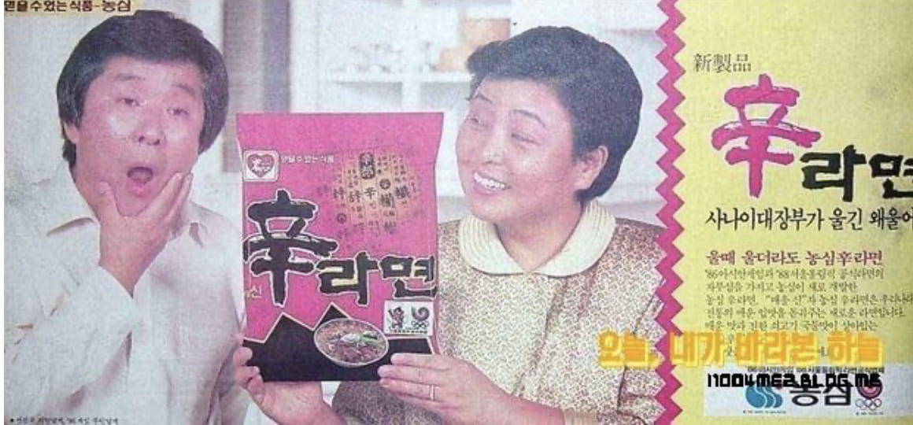

구봉서, 강부자
사나이대장부가 울긴 왜울어
울 때 울더라도 농심 신라면

사나이대장부가 울긴 왜울어
울 때 울더라도 농심 신라면

구봉서는 대한민국 방송과 영화계를 대표하는 1세대 코미디언이자 배우로, 뛰어난 입담과 친근한 이미지로 대중의 사랑을 받았다. 강부자는 1960년대부터 활약한 대한민국의 대표 배우로, 다양한 드라마와 방송에서 폭넓은 연기력을 선보이며 오랜 기간 국민 배우로 자리매김했다. 두 사람 모두 높은 인지도와 신뢰감을 바탕으로 광고 모델로서도 큰 영향력을 발휘했다.
신라면은 농심이 1986년 출시한 매운맛 라면으로, 한국인의 입맛에 맞춘 얼큰하고 깊은 국물 맛을 특징으로 한다. 출시 이후 꾸준한 인기를 얻으며 대한민국을 대표하는 라면 브랜드로 성장했으며, 국내뿐만 아니라 해외 시장에서도 큰 사랑을 받고 있다.
"사나이대장부가 울긴 왜 울어, 울 때 울더라도 농심 신라면" 이라는 유쾌한 광고 문구는 매운맛을 강조하면서도 소비자들에게 강한 인상을 남겼다. 구봉서와 강부자의 친근한 연기와 재치 있는 표현은 광고의 재미를 더했으며, 신라면의 인지도를 높이는 데 큰 역할을 했다.
1980년대 광고는 제품의 특징을 쉽고 기억하기 좋은 문구로 전달하는 것이 중요했다. 기업들은 국민적 인기를 얻고 있던 배우와 코미디언을 광고 모델로 기용해 친숙한 이미지를 만들었으며, 광고 속 유행어가 대중문화의 일부가 되는 경우도 많았다. 신라면 광고 역시 재치 있는 카피와 유명 연예인의 조합으로 소비자들에게 강한 인상을 남긴 대표적인 사례로 평가된다.